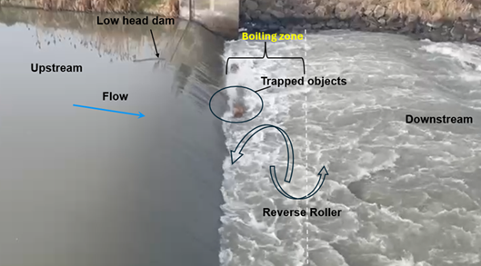
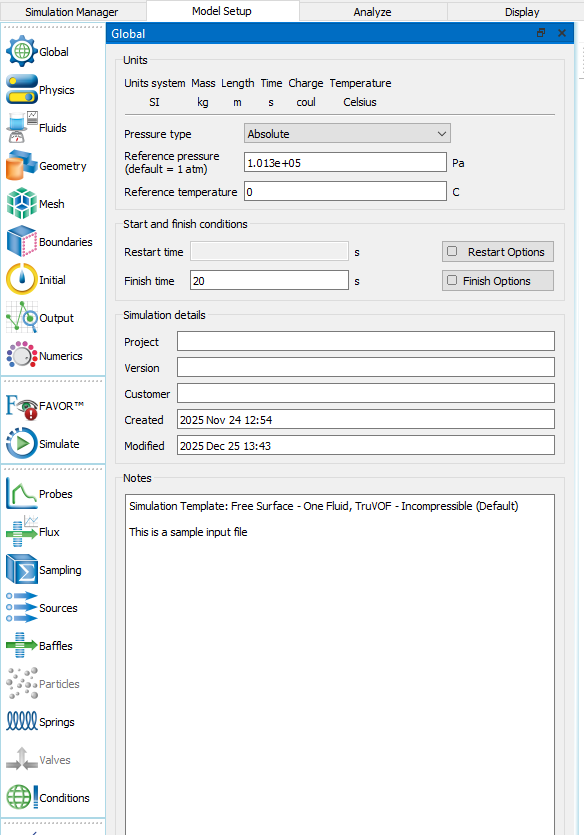

This HydroShare resource provides an online training toolbox for setting up, running, and interpreting a FLOW-3D HYDRO computational fluid dynamics (CFD) model for assessing drowning potential at low-head dams. The toolbox is designed as a step-by-step learning module with example files, screenshots, model inputs, downloadable results, and post-processing materials.
The purpose of this toolbox is to guide users through the complete modeling workflow, from preparing input data to interpreting FLOW-3D simulation results.
This toolbox demonstrates how FLOW-3D can be used to set up, run, and interpret a three-dimensional CFD model for low-head dam reverse-roller and drowning-potential assessment. This manual toolbox discusses the step-by-step process for simulating the flow at low-head dams in different scenarios. It includes analysis of several ranges of discharge/head for which a reverse roller forms, its drowning potential, flow characteristics, discharge, water-surface profile, velocity distribution, etc.
The current example focuses on:
Recent advances in three-dimensional CFD modeling allow modelers to analyze reverse-roller hydraulics and, when needed, evaluate floating-body behavior using human-prototype or simplified floating-body representations. This type of modeling can support the assessment of drowning potential and can also be used to evaluate structural modifications intended to reduce reverse-roller strength.
FLOW-3D outputs also provide intuitive visualizations that can help communicate hydraulic hazards to first responders, dam owners, government officials, and the public. While several commercial and open-source CFD tools are available for hydraulic-structure modeling, FLOW-3D is widely used because it provides robust free-surface and multiphase-flow modeling capabilities for complex hydraulic conditions.
A CFD toolbox can assist dam owners and stakeholders in identifying reverse-roller hazards and evaluating mitigation alternatives. A straightforward CFD workflow allows users to assess low-head dam drowning potential in ways that are not possible using only one-dimensional or two-dimensional hydraulic models.
The toolbox can also be used to analyze structural modifications such as sills, baffle blocks, and other features that may be placed on the downstream apron or stilling floor to reduce hazardous reverse-roller behavior.

This toolbox helps users learn how to:
The following software may be needed to complete this training module:
| Software | Purpose |
|---|---|
| FLOW-3D HYDRO / FLOW-3D | Main CFD model setup and simulation |
| FLOW-3D POST | Visualization and post-processing |
| CAD software | Geometry preparation or editing, if needed |
| ArcGIS or QGIS | DEM, bathymetry, terrain, or survey-data processing |
| Excel / MATLAB / Python | Boundary-condition preparation, data processing, and result summaries |
| Jupyter Notebook | Optional reproducible workflow for post-processing or data preparation |
The following data are typically needed for this workflow:
| Input Data | Description |
|---|---|
| Geometry file | Hydraulic structure and/or channel geometry, such as STL, OBJ, or CAD-derived surface file |
| Terrain or bathymetry | Channel bed surface, LiDAR DEM, ADCP bathymetry, surveyed cross sections, or interpolated bed surface |
| Inflow condition | Flow rate, velocity boundary, discharge hydrograph, or rating-curve-based discharge |
| Downstream condition | Tailwater depth, stage, pressure boundary, rating curve, or measured downstream water level |
| Fluid properties | Water density, viscosity, and gravitational acceleration |
| Mesh settings | Computational-domain extent and mesh resolution |
| Validation data | Observed water levels, velocity data, laboratory data, or field observations, if available |
The resource files are organized as follows:
Flow3D_HydroShare_Toolbox/
│
├── README.md
├── lhd.png
├── 01_Input_Data/
├── 02_Geometry/
├── 03_FLOW3D_Model_Files/
├── 04_Boundary_Conditions/
├── 05_Step_by_Step_Walkthrough/
├── 06_Results/
├── 07_PostProcessing/
└── 08_Downloadable_Package/Use short folder and file names without spaces. For example:
lhd.png
04_Boundary_Conditions/inflow_tailwater_summary.xlsx
06_Results/velocity_contour_Q1.pngThis training example demonstrates a FLOW-3D CFD modeling workflow for evaluating hazardous hydraulic conditions at a low-head dam. The example focuses on identifying reverse-roller behavior, high-velocity zones, free-surface response, and flow patterns relevant to drowning-potential assessment.
Before importing the geometry into FLOW-3D, check the following:
If bathymetry, DEM, or cross-section data are included, prepare the terrain before creating the FLOW-3D model. Recommended steps for processing LiDAR DEM in ArcGIS Pro:
Additional checks:
Prepare a 3D solid model of the weir geometry using AutoCAD, Civil 3D, Sketchup, etc., to scale. Incorporate all relevant structural features such as the weir crest, side walls, training walls, and stilling basin. Similarly, generate the terrain surface using DEM or surveyed topographic data. Once both the weir and terrain models are complete, convert them to STL format using the CAD software or equivalent tools to ensure compatibility with FLOW-3D. Ensure the geometry is watertight and free of gaps or overlaps before exporting.
While preparing the solid geometry for FLOW-3D, ensure that the User Coordinate System (UCS) is aligned as follows and that the units match FLOW-3D:
This alignment matches FLOW-3D's coordinate system and ensures correct geometry orientation during import. Import as STL file(s) into FLOW-3D and assign appropriate geometry types (subcomponent, fluid-region boundary, etc.).
If trapped floating-body simulation is required:
The computational domain should include:
Mesh refinement should be concentrated near:
A coarser mesh can be used farther from the hydraulic structure to reduce computational cost. Multiple meshes (mesh block, mesh planes, nested block) can be used for refinement in particular regions.
Boundary conditions are known conditions (such as flow depth or discharge) that allow the discretized governing flow equations to be solved at each grid node. In FLOW-3D, upstream boundary conditions can be defined by specifying flow depth, velocity, or discharge, depending on channel geometry and flow uniformity. For the downstream boundary, a flow-depth or pressure boundary condition is typically assigned to compute backwater effects and ensure numerical stability, especially in subcritical flow.
Containing block mesh:
For nested block meshes, symmetry boundary conditions are applied for all boundaries. For initial conditions, set the upstream water level to the weir crest elevation; for the global initial condition, set the tailwater depth to represent downstream flow conditions.
Typical boundary conditions are summarized below:
| Boundary | Typical Condition | Notes |
|---|---|---|
| Upstream | Flow rate, velocity, or pressure boundary | Based on measured or design discharge |
| Downstream | Tailwater depth, pressure outlet, or rating curve | Should represent downstream hydraulic control |
| Bottom | Wall boundary | Represents bed and structural surfaces |
| Side walls | Wall or symmetry boundary | Depends on channel/domain representation |
| Top | Atmospheric / free-surface condition | Allows free-surface flow development |
Assign the fluid as water with its properties from the FLOW-3D material library.
Set units, temperature, reference pressure, file details, and the start and end times of the simulation. The end time should be long enough for the desired flow to fully develop.
Set gravity z-component to −9.81 m/s². Use the Renormalized Group (RNG) turbulence model for fluid motion. Activate wall shear stress to account for shear stress at boundary surfaces. If a trapped floating body is simulated, activate the moving-object model with the collision model enabled.
Output variables are selected based on the analysis requirement.
Use the default solver settings unless project requirements dictate otherwise.
In FLOW-3D, FAVOR™ (Fractional Area/Volume Obstacle Representation) represents solid geometry inside the computational mesh without requiring the mesh to conform exactly to the object's shape. FAVOR calculates how much of each mesh cell is occupied by solid geometry and how much remains open for fluid flow.
If field or laboratory data are available, the model should be checked against:
After completing this training module, users should be able to generate and interpret the following outputs.
| Result | Purpose |
|---|---|
| Water-surface elevation | Identify flow depth, free-surface profile, and upstream/downstream water levels |
| Velocity magnitude | Locate high-velocity zones and flow-acceleration regions |
| Pressure distribution | Evaluate pressure zones and hydraulic loading |
| Turbulence and vorticity | Identify recirculation, roller structure, and energy-dissipation regions |
| Flow profiles | Compare upstream, crest, toe, and downstream hydraulic conditions |
| Streamlines or pathlines | Visualize flow direction and recirculation patterns |
| Animations | Communicate transient flow evolution and hydraulic hazards |

Purpose: Start a new FLOW-3D HYDRO simulation using the correct unit system and project name.
Action:
LHD_reverse_roller_training_case.Expected outcome: A new FLOW-3D simulation is created and ready for geometry import.
Purpose: Load the low-head dam and channel geometry into the FLOW-3D model.
Action:
02_Geometry folder.Expected outcome: The hydraulic-structure geometry appears correctly within the computational domain.
Purpose: Create a model domain that includes the upstream approach, dam crest, downstream apron, reverse-roller zone, and downstream recovery reach.
Action:
Expected outcome: The computational domain fully contains the hydraulic features of interest.
Purpose: Create a computational mesh that captures key hydraulic behavior while maintaining reasonable computation time.
Action:
Expected outcome: The mesh is sufficiently refined near the low-head dam and reverse-roller region.
Purpose: Activate the physics models needed for free-surface hydraulic simulation.
Action:
Expected outcome: The simulation physics are appropriate for low-head dam free-surface flow and reverse-roller analysis.
Purpose: Define the upstream inflow and downstream hydraulic control.
Action:
Expected outcome: All boundary conditions are assigned and consistent with the site or laboratory conditions.
Purpose: Define initial water levels and flow conditions to improve model stability.
Action:
Expected outcome: The model begins from a stable and physically reasonable initial condition.
Purpose: Set runtime, output intervals, and numerical controls.
Action:
Expected outcome: The simulation control settings are ready for running the model.
Purpose: Run the model and monitor stability.
Action:
Expected outcome: The model runs successfully and produces output files for post-processing.
Purpose: Use FLOW-3D POST to visualize and extract hydraulic results.
Action:
Expected outcome: Hydraulic results are available for interpretation and reporting.
Purpose: Use model outputs to assess reverse-roller formation and drowning potential.
Action:
Expected outcome: The user can interpret whether the modeled flow condition may indicate hazardous reverse-roller behavior.
The following files are included in the HydroShare resource:
| Folder | Description |
|---|---|
01_Input_Data | Flow rates, tailwater data, survey data, and supporting input files |
02_Geometry | Low-head dam, channel, and/or terrain geometry files |
03_FLOW3D_Model_Files | FLOW-3D simulation files |
04_Boundary_Conditions | Boundary-condition tables and notes |
05_Step_by_Step_Walkthrough | Additional notes and screenshots for the online walkthrough |
06_Results | Example figures, tables, and animations |
07_PostProcessing | Optional Jupyter Notebook, Python scripts, or post-processing files |
08_Downloadable_Package | Complete zipped training package |
| Item | Description |
|---|---|
| Toolbox version | Version 1.0 |
| Author | Rakesh Kumar Chaudhary |
| Institution | Utah State University |
| Date | May 2026 |
| Contact | Add contact email here |
This toolbox is intended for training and educational use. Users should modify the mesh resolution, boundary conditions, physics options, and simulation controls based on their own project needs and available validation data.
The Low-Head Dam Inventory (LHDI) Live Forecasts platform is a public-safety tool that combines the national low-head dam inventory with real-time streamflow forecasts from the NOAA National Water Model (NWM). The goal is to help recreators, first responders, dam owners, and the public understand when conditions at a low-head dam may pose a drowning hazard.
This project is developed and maintained through a collaboration between:
Forecasts are informational and are not a substitute for on-site judgment. Conditions at any low-head dam can change rapidly. Always exercise caution near hydraulic structures and follow local advisories.
Questions, corrections, or suggestions about the LHDI Live Forecasts platform are welcome.
Email: Dr. Rollin Hotchkiss
If you notice a dam that is missing, mislocated, or has outdated information, please include:
For research partnerships, CFD modeling support, or access to the underlying data, contact the BYU Hydraulics group directly.
BYU Hydraulics Laboratory
Department of Civil and Construction Engineering
Brigham Young University
Provo, UT 84602